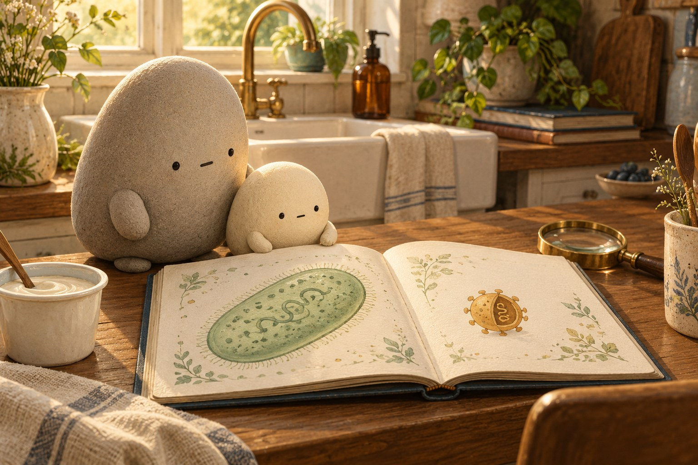
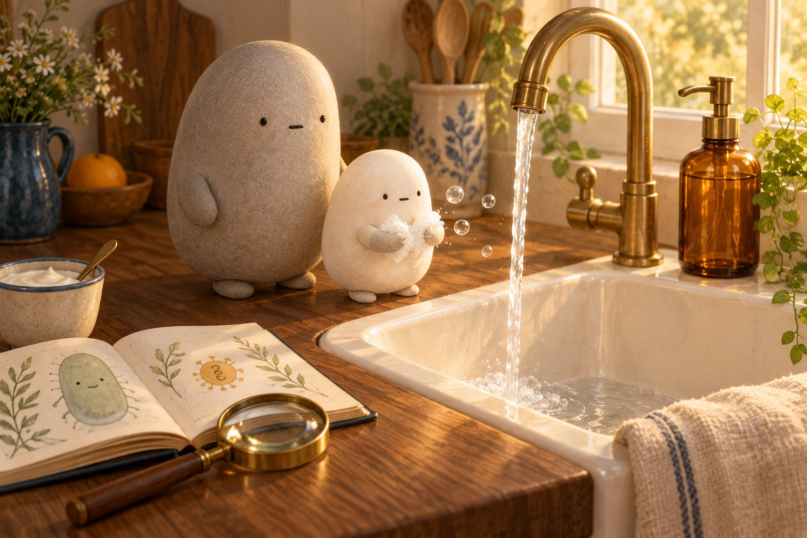
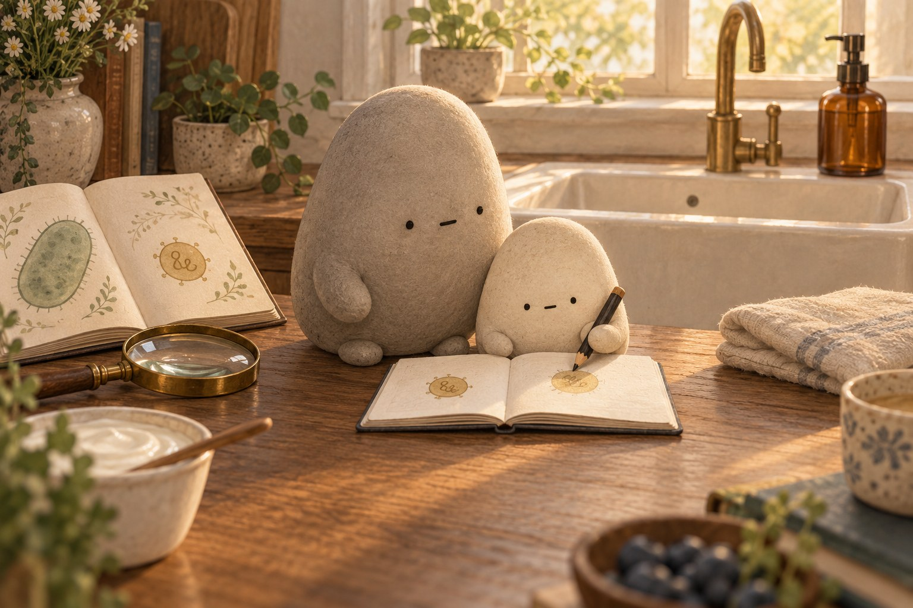
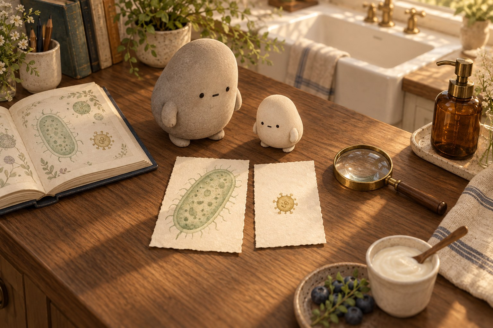

A yogurt cup sits beside the oval guest in the book.
A little explanation & something to try
Bacteria are whole living cells. Many help us: some live in our gut and help with food, and others help make yogurt. Some can make people unwell. We can welcome the helpers and keep our hands clean.
Try this. Say one place where helpful bacteria can live.

A bacterium is a whole cell. A virus carries instructions in a coat.
What does a virus need to make copies?
Compare the oval cell with the smaller round package and its coiled thread.
A little explanation & something to try
A virus is not a cell. It is a tiny package of instructions in a coat. It must borrow a living cell’s machinery to make copies. Bacteria are much bigger than viruses, but both are too small to see with just your eyes.
Try this. Finish this thought: Instructions need something to carry them out, just as a virus needs…

Soap loosens germs. Scrubbing and rinsing carry them away.
How does soap help the water?
Little rubs the lather over both mitten hands. The towel waits beside the sink.
A little explanation & something to try
Soap can pull apart the oily outer layers of many germs. Soap and scrubbing also lift germs off skin so running water can rinse them away. Plain water rinses off some, but soap helps remove more. Scrub for about 20 seconds, then rinse and dry.
Try this. Say the commands in order: Wet. Add soap. Scrub. Rinse. Dry.

Your body’s defenders can learn and remember germs.
What can your body remember?
Little keeps a guest’s shape in the notebook.
A little explanation & something to try
Your immune system is your body’s team of defenders. Some learn to recognize germs and remember their features next time. Antibiotics are different: these medicines work on bacteria but not viruses. Each kind of help has its own job.
Try this. Tell how learning a shape could help you recognize it again.
A little book of tiny guests
Tiny Guests
Guests beyond our eyes
Little Wonderer held a magnifier beside the sink. “Can I see the tiny guests on my hands?” “Germs are far too small for just our eyes,” said Big. “Even that magnifier cannot show them.” They opened a book. Bacteria and viruses waited on its pages. Were these tiny guests alike?
Why did Little need the book as well as the magnifier?
A whole little cell
Little paused at a yogurt cup. “Are all bacteria a problem?” “Many are helpers,” said Big. “Some live happily in your gut and help with food. Others help make yogurt. Some can make people unwell.” A bacterium is one whole living cell: a tiny unit with the parts it needs to live.
What makes a bacterium a whole living cell?
Instructions in a coat
The next guest was much smaller. A virus is a tiny package of instructions in a coat, not a cell. It cannot make copies alone. It must borrow a living cell’s machinery: the parts that do the work. “Like a program saying ‘copy me’?” asked Little. “Instructions that need a cell,” said Big.
Why can’t a virus follow its instructions alone?
A kind habit
Back at the sink, Little made a soft lather. Soap can pull apart the oily outer layers of many germs. It also loosens germs from skin. “Wet. Add soap. Scrub for 20 seconds. Rinse. Dry,” Little said. Water carried the loosened guests away. A small habit could do a lot.
What do soap, scrubbing, and rinsing do?

Different tiny guests
“Does one medicine work on both guests?” Little asked. Big shook their head. “An antibiotic is a medicine that works on bacteria. It does not work on viruses, because they do not have the same cell parts.” Little compared the two shapes again. Different tiny guests needed different kinds of help.
Why doesn’t an antibiotic work on a virus?
A clue to remember
“Your immune system is your body’s team of defenders,” said Big. “Some learn to recognize germs and remember them next time.” Little saved a shape in the notebook, then a command: “Rinse your hands well.” What other kind habits could Little keep?
For a complete still story, download the foldable book.
Six small stories to solve
Count bubbles, yogurt cups, and little drawings. Choose addition or subtraction for each story.
Soap loosens germs. Scrubbing and rinsing carry them away.
Choose one story. Explain why you added or subtracted.
1. Little draws 28 soap bubbles, then draws 17 more. How many bubbles are on the page?
28 + 17 =
A small hint
Add the tens and ones. You may trade 10 ones for a ten.
2. Little plans to scrub for 20 seconds. So far, 8 seconds have passed. How many seconds of scrubbing remain?
20 − 8 =
A small hint
Count up from 8 to 20, or subtract 8 from 20.
3. A breakfast shelf has 24 yogurt cups. Big adds 18 cups. How many yogurt cups are on the shelf now?
24 + 18 =
A small hint
Add 10 cups, then add 8 more cups.
4. Little draws 52 helpful bacteria in a notebook and colors 16 of them. How many drawings still need color?
52 − 16 =
A small hint
Subtract 10 first, then subtract 6.
5. One book page shows 35 helpful bacteria. Another page shows 27. How many bacteria are shown on the two pages?
35 + 27 =
A small hint
Add 20, then add 7.
6. Little has 63 bubble stickers and uses 25 on a handwashing poster. How many stickers are left?
63 − 25 =
A small hint
Subtract 20, then subtract 5.
Give a kind habit its words
Write one clear command sentence about washing hands. You can say it first.
Bacteria and viruses are too small to see with just your eyes.
First, …tell how to begin
Soap loosens germs. Scrubbing and rinsing carry them away.
Then, …tell how to use soap and scrub
Your body’s defenders can learn and remember germs.
At the end, …tell how to rinse or dry
Draw one handwashing step. Add one label.
SAY IT FIRST. THEN DRAW OR WRITE.
A temporary space. Copy your words before closing or reloading; they are not saved or sent.
wetsoapscrubrinsedryhandsfirstthen
Read your sentence. Does it tell what to do, with a command such as Wet, Scrub, Rinse, or Dry?
A close look at tiny guests
A clue worth keeping
Welcome words, pointing, or a sketch. Tell what changed, and why. Your body’s defenders can learn a germ’s features and remember them next time.
You can stop here.
Follow the tiny guests
Predict. What might soap change? What might plain water change?
Arrange in words. Choose a bacterium, a whole living cell, or a virus, a smaller package of instructions in a coat. A virus needs a living cell’s machinery to make copies.
Activate. Soap can pull apart oily outer layers of many germs. Scrubbing lifts germs from skin. Rinsing carries them away. Plain water rinses some away, but soap helps remove more.
Notice. Antibiotics work on bacteria, but not viruses. Grown-ups and doctors decide about medicine. Your body’s defenders can learn to recognize germs and remember them.
Keep a kind habit: Wet. Add soap. Scrub for about 20 seconds. Rinse. Dry.
Quiz
Answer key
Quiz 1
A bacterium is a whole living cell. A virus is a package of instructions in a coat and needs a living cell to make copies.
Quiz 2
Soap can pull apart oily outer layers of many germs. Soap and scrubbing also lift germs off skin so water can rinse them away. Scrub for about 20 seconds.
Quiz 3
Antibiotics work on bacteria, but not on viruses. Viruses do not have the same cell parts. Grown-ups and doctors decide about medicine.
Quiz 4
Some defenders in your immune system learn to recognize germs and remember their features. That can help them recognize the same germs faster next time.